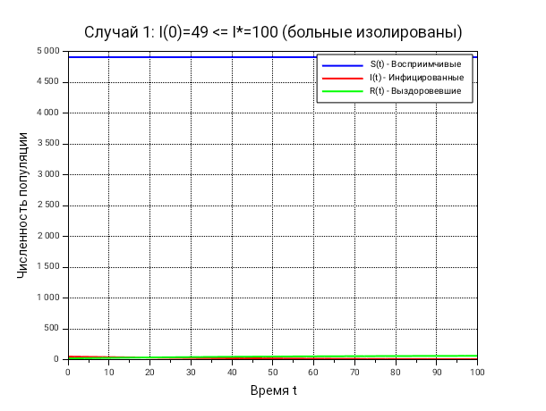
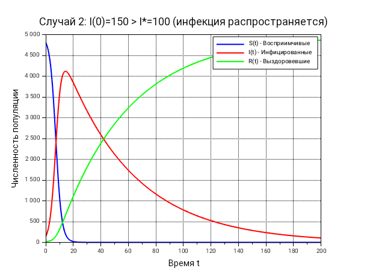

Изучить математическую модель распространения эпидемии с пороговым значением I*, построить графики динамики численности групп S(t), I(t), R(t).
\[ \frac{dS}{dt} = \begin{cases} -\alpha \dfrac{S I}{I^*}, & I(t) > I^* \\[10pt] 0, & I(t) \leq I^* \end{cases} \]
\[ \frac{dI}{dt} = \begin{cases} \alpha \dfrac{S I}{I^*} - \beta I, & I(t) > I^* \\[10pt] -\beta I, & I(t) \leq I^* \end{cases} \]
\[ \frac{dR}{dt} = \beta I \]
Критическое значение \(I^* = 100\) является порогом:
Условие: больные изолированы
Система: \[ \frac{dS}{dt} = 0, \quad \frac{dI}{dt} = -\beta I, \quad \frac{dR}{dt} = \beta I \]
Результат: - \(S(t) = 4905\) (постоянна) - \(I(t)\) экспоненциально убывает - \(R(t)\) растёт и стремится к 68

Условие: инфекция распространяется
Система: \[ \frac{dS}{dt} = -\alpha \frac{S I}{I^*}, \quad \frac{dI}{dt} = \alpha \frac{S I}{I^*} - \beta I, \quad \frac{dR}{dt} = \beta I \]
Результат: - \(S(t)\) убывает - \(I(t)\) имеет пик \(\approx 120\) на времени \(\approx 15\) - \(R(t)\) растёт и стремится к \(\approx 323\)

| Показатель | Случай 1 | Случай 2 |
|---|---|---|
| Максимум I(t) | 49 (убывает) | \(\approx 120\) |
| Время пика | — | \(\approx 15\) |
| Конечное S | \(\approx 4905\) | \(\approx 4650\) |
| Конечное R | \(\approx 68\) | \(\approx 323\) |